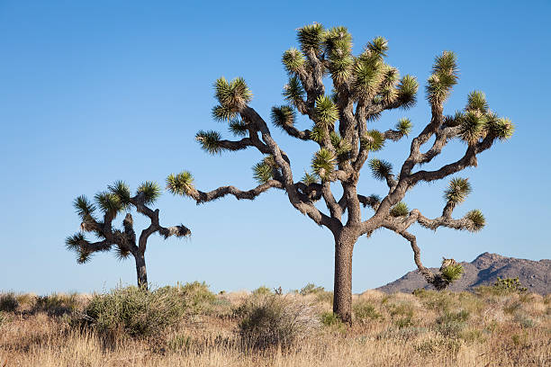

Park narodowy w południowo-wschodniej części Kalifornii w hrabstwach Riverside i San Bernardino. Został ustanowiony jako pomnik narodowy w 1936 roku i podniesiony do rangi parku narodowego w roku 1994. Nazwa parku wywodzi się od charakterystycznych drzew Jozuego, które występują powszechnie na jego terenie. Najkorzystniejszymi porami roku do zwiedzania parku są wiosna i jesień, gdy średnia temperatura wynosi około 30 °C w dzień i 10 °C nocą. Na obszarze parku można znaleźć ponad 700 różnych gatunków roślin. Najbardziej charakterystycznymi roślinami parku są drzewa Jozuego, a także kaktusy cholla. Na terenie parku znajdują schronienie także liczne gatunki zwierząt, wśród nich 55 gatunków ssaków, 44 gatunki gadów, ponad 250 gatunków ptaków oraz 3 gatunki przystosowanych do życia na pustyni płazów. Ze względu na powszechnie występujące na terenie parku skupiska naturalnych form skalnych oraz olbrzymich głazów o fantastycznych kształtach jest on popularnym miejscem dla uprawiania wspinaczki oraz boulderingu. Jedną z najbardziej popularnych i łatwo dostępnych atrakcji parku jest formacja skalna przypominająca swoim kształtem ludzką czaszkę.
